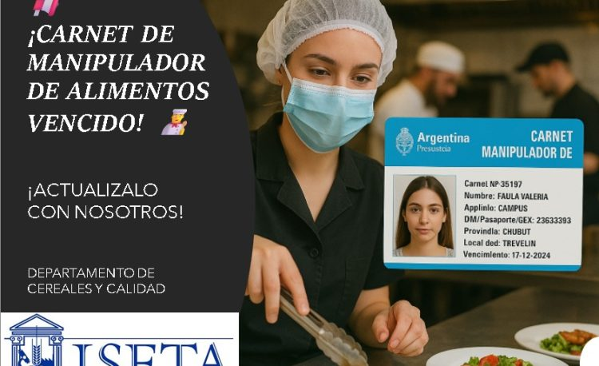
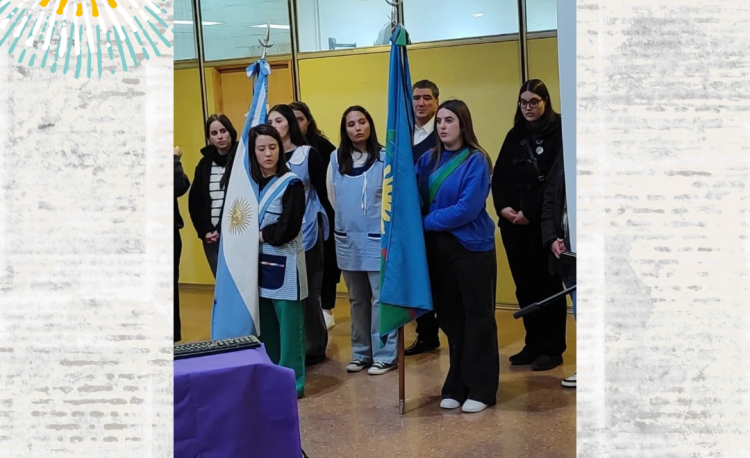
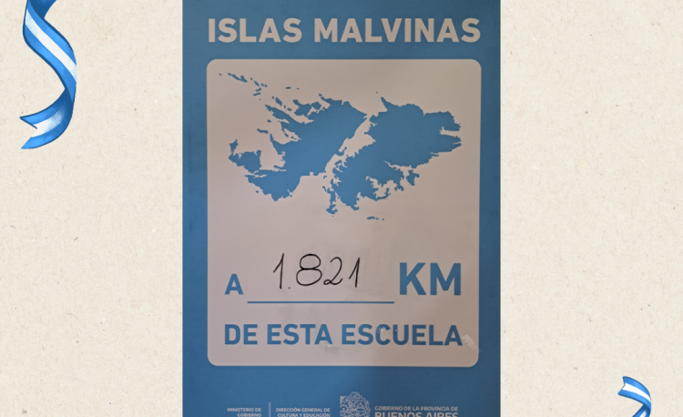
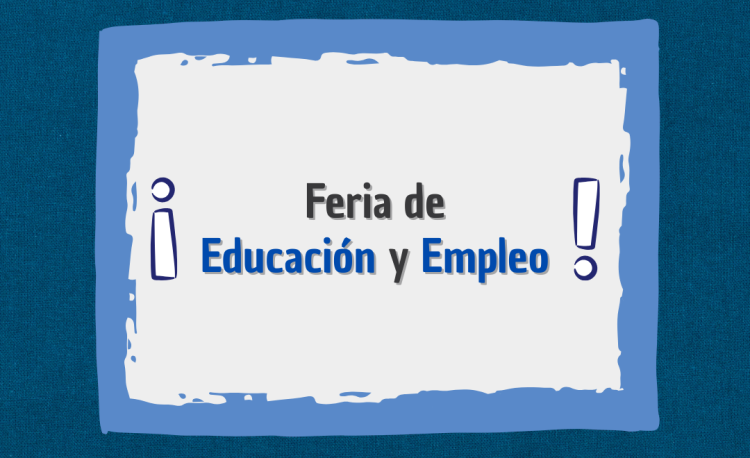

¿Tu carnet de manipulación de alimentos está vencido? ¡Es momento de revalidarlo!
Mantener tu Carnet de Manipulación de Alimentos actualizado no solo es una obligación legal, sino también una muestra de compromiso …
El Instituto Superior Experimental de Tecnología Alimentaria (ISETA) depende de la Dirección General de Cultura y Educación de la Provincia de Buenos Aires inaugurado el 17/7/1978.

Mantener tu Carnet de Manipulación de Alimentos actualizado no solo es una obligación legal, sino también una muestra de compromiso …

Acto Conmemorativo en Homenaje al General Martín Miguel de Güemes. El pasado martes 17 de junio, se llevó a cabo …

En el marco del Día de la Afirmación de los Derechos Argentinos sobre las Islas Malvinas, conmemorado cada 10 de …

El pasado jueves 5 de junio se llevó a cabo una nueva edición de la Feria de Educación y Empleo …
El Instituto Superior Experimental de Tecnología Alimentaria (ISETA) depende de la Dirección General de Cultura y Educación de la Provincia de Buenos Aires inaugurado el 17/7/1978. Las actividades que se realizan en la institución le permiten insertarse en las siguientes áreas de trabajo:
Comprende el dictado de las Carreras de Técnico Superior en Alimentos. Técnico Superior en Producción Agrícola Ganadera. Técnico Superior en Mecánica Liviana. Técnico Superior en Análisis de Sistemas. Técnico Superior en Higiene y Seguridad en el Trabajo. Técnico Superior en Servicios Gastronómicos. Técnico Superior en Biotecnología. Y cuenta con una extensión áulica en la ciudad de Henderson, partido de Hipólito Yrigoyen con la carrera Técnico Superior en Gestión de las Energías Renovables.
Implica la realización de análisis de suelos, aguas, semillas, alimentos balanceados, productos alimenticios en general, y asesoramiento técnico a industrias y productores.
Abarca el estudio y desarrollo Científico-Tecnológico en alimentos, especialmente en áreas tales como: nutrición y microbiología, productos a base de carnes, lácteos, frutas y hortalizas y cereales, y evaluación sensorial de los mismos.